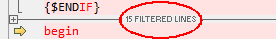

Options de modification de texte
Outils > Options > Modification de texte


Options de modification de texteOutils > Options > Modification de texte |
|
|
Ces options s'appliquent aux sessions de Comparaison de Textes et de Fusion de Textes. Indentation automatique Lorsque coché et qu'une nouvelle ligne est créée, elle est automatiquement indentée pour que les espaces blancs de début de ligne correspondent à la ligne précédente. La touche Retour arrière enlève l'indentation Lorsque coché et que le curseur est positionné immédiatement après l'espace blanc en tête de la ligne, presser la touche Retour arrière supprime suffisamment d'espaces blancs pour correspondre au niveau d'indentation précédent, tel que défini par les lignes précédentes. Autoriser le positionnement au-delà de la fin de ligne Lorsque coché, le curseur d'édition n'est pas contraint par la fin du texte sur une ligne. Initialiser "Texte à rechercher" avec le mot courant Lorsque coché et s'il n'y a pas de sélection, le mot actif est placé comme texte de recherche pour la commande Rechercher Afficher le nombre de lignes filtrées Lorsque coché, un résumé des lignes cachées par des filtres d'affichage est montré :  Nombre de lignes de contexte Définit le nombre de lignes correspondantes à afficher avant et après une section de différences lorsque Afficher le contexte |